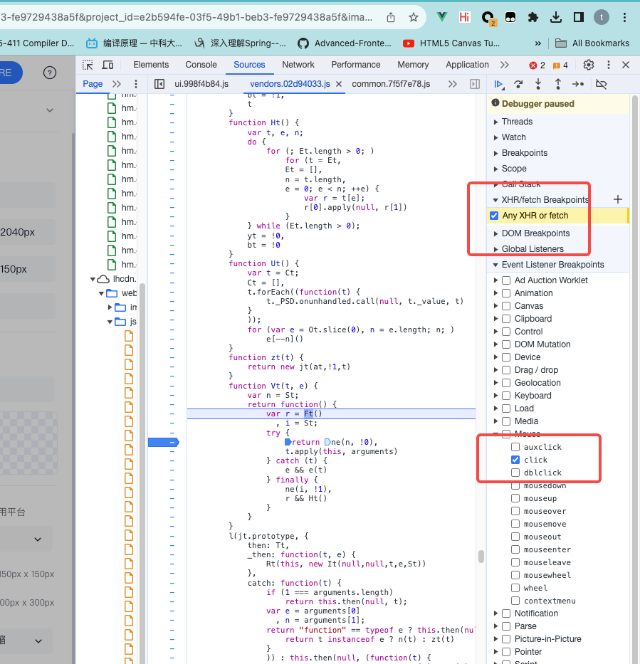
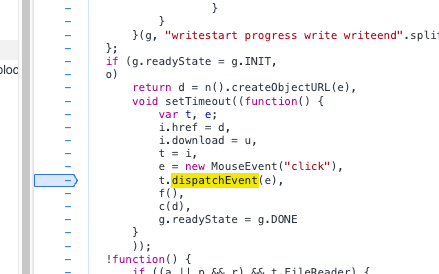
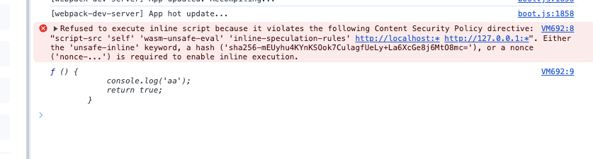
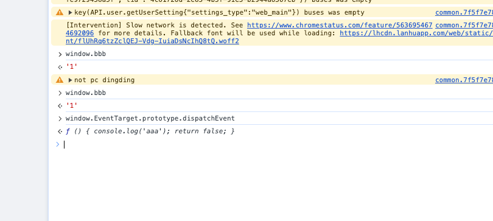

蓝湖切图拦截插件（一）插件代码注入
之前写过一个figma的切图插件，链接如下快切 现在发现又开始用蓝湖了，所以想搞个蓝湖的插件。事实上网上是有具体的方案的，但是我没有找到直接能用的chrome插件。尝试去油猴和extension store寻找蓝湖相关的插件，结果都没有，没办法只能自己动手写。
这里有一篇参考文章Chrome插件：切图压缩工具，当然这个只写了一些大致思路，具体的插件形态应当是根据不同的团队功能有所不同。同时呢，这里没有一些技术细节，这片文章会大致记录我写插件的时候所碰到的一些技术细节
如何去打断点调试
首先第一点就是如何去打断点调试找到具体的下载文件调用方法。chrome devtool中我们可以直接添加xhr时以及click时断点如下所示

剩下的自己慢慢找，中间有很多明显的axios的interceptor，大胆跳过即可。最终可以找到代码在这里

再接下去就是注入脚本执行劫持
插件如何注入脚本劫持
chrome如何向页面中注入脚本的，这里有两个选项，直接写油猴脚本，让油猴注入即可，也可以自己写插件，我选择自己折腾写插件。但是过程中又碰到很多问题。
chrome 插件注入脚本可以使用content_scripts，即在manifest中定义content_scripts字段并指定需要注入的脚本，也可以在插件上面自定义事件，使用 chrome.scripting.executeScript方法手动注入脚本。但是不管哪种他们都有限制
- 注入的js和原始页面不共享js
- 注入的js无法完全访问原页面的window，你可以获取原页面的document并进行赋值修改，比如你可以访问但是你无法直接修改原页面的window，比如你直接给window赋值 window.a=1，原页面无法访问
- 注入的js只能访问部分chrome api如下所示 chrome manifest v3 content_script
关于content_script还有一些问题，那就是你指定的run_at不同，可访问的值也不同，比如你run_at为document_start时你访问到的document不是原页面的，而是chrome插件的document。
哥们儿我有点搞不懂文章里面使用executeScript 怎么就可以直接篡改window.EventTarget的？可能是我的问题，谁有空可以也试试，也许是我的问题。
总之，综上问题，想要篡改页面代码，需要在手动的在页面上动态添加script标签
1 | const injectCodeFun = (): void => { |
但是但是，又有问题。直接执行inline script是会报错的，具体是一个CSP的协议政策

找了一圈如何解决，基本都是让修改manifest中的content_security_policy，但是插件的默认policy已经是允许执行inline代码了并且尝试了stack overflow上面给到的配置依然无效，最终的解决方案是在manifest中配置web_accessible_resources 指定一个resource。
1 | "web_accessible_resources": [ |
然后在inject里面修改window的属性，写入如下代码。
1 | (function () { |
然后在content_scripts指定的代码这样写
1 | const script = document.createElement('script') |
最后我们来看结果。

到此为止关键的注入代码问题已经解决了，后面再更新如何拉取蓝湖的图片并压缩上传。